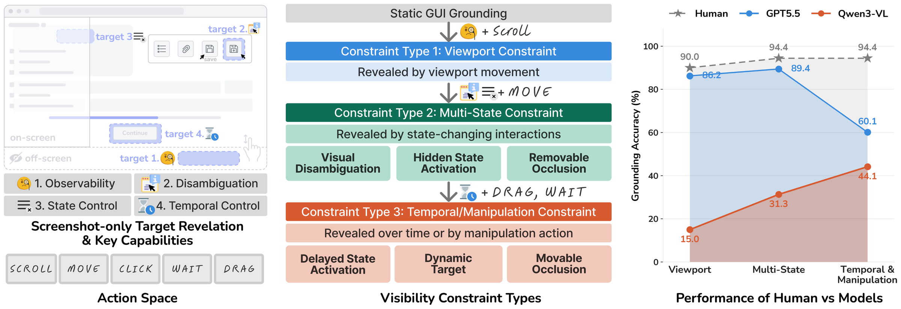

Abstract
GUI grounding benchmarks ask whether an agent can localize a target that is already visible in a static screenshot. Real interfaces often violate this assumption: a target may be off-screen, appear only after a state change or hover, remain occluded, or become actionable after a delay. This leaves the ability to recover target visibility unevaluated. To measure this reveal step, we introduce Interactive GUI Grounding (IGG), a benchmark in which an agent must first make the target visible through interaction and then click it. IGG contains 601 tasks across 16 controllable GUI environments and seven visibility-constraint sub-types, with a compact action space of scrolling, moving, dragging, waiting, and clicking. In our human study, participants achieve 94.6% accuracy, while GPT-5.5 reaches 79.4% and the strongest evaluated open-source VLM reaches only 31.6%. To identify the source of this gap, we conduct two controlled interventions. Telling Qwen3-VL which interaction to perform raises its accuracy only from 30.8% to 33.9%, whereas performing the interaction for the model raises it to 81.9%. The bottleneck is executing the reveal interaction, not recognizing the target once it is exposed. We further show that this capability is learnable, demonstrating that visibility recovery can be strengthened consistently across model families.
Benchmark
601 tasks in 16 controllable environments modeled on familiar apps, grouped into three constraint types and seven sub-types.
The agent sees only screenshots and a goal-only instruction, acts with scroll, move, drag, wait, and click, and succeeds on the first click that hits the target.

Results
A large human–model gap
Grounding accuracy (%) by sub-type on the 601-task benchmark. Humans are scored in a separate solvability study.
The bottleneck is the reveal
Telling Qwen3-VL which interaction to use barely helps. Doing the interaction for it nearly triples accuracy.
Share of failed Qwen3-VL runs (%) that never try the action the task needs.
Visibility recovery is learnable
Frequency-balanced SFT followed by online GRPO, on 120 held-out tasks.
BibTeX
@inproceedings{kim2026igg,
title = {{IGG}: A Benchmark for Interactive {GUI} Grounding under Visibility Constraints},
author = {Kim, Kyeongseon and Son, Jiyeon and Oh, Tae-Hyun},
booktitle = {Proceedings of the 2026 Conference on Empirical Methods in Natural Language Processing (EMNLP)},
year = {2026}
}